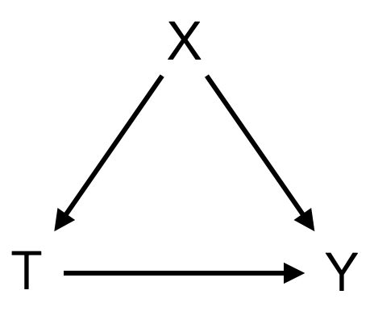

After motivating causal thinking in the first post of this series, we are ready to introduce some concepts and terminology that will not only allow us to reason about causality in a formal manner but will also help us get a more precise understanding of the key ideas and challenges of causal inference. We’ll begin with the potential outcomes framework, also known as the Neyman-Rubin causal model because its notation was first introduced by Jerzy Neyman in the 1920s (Neyman, 1923, translated and reprinted in Splawa-Neyman, 1990) in the context of randomized experiments and later extended into a general framework by Donald Rubin (1974).
Potential outcomes and the individual treatment effect
In the potential outcomes framework, a causal effect is defined as a comparison between two states of the world. We’ll illustrate this with an example. Imagine that you have to study for an important and challenging test. You decide to try a new learning technique that you haven’t used before (e.g., spaced repetition) and ultimately pass the test. Did the new learning technique cause you to pass the test? This depends on what would have happened in the alternative reality where you didn’t try out the new technique and stuck to your old ways of doing things. If you had also passed the test, there wasn’t a causal effect (on the outcome of passing or failing the test); but if you would have failed the test, there indeed was a causal effect.
In this simple example, we introduced the concept of potential outcomes. Potential outcomes exist only ex ante; they are a set of possibilities that can potentially be observed. Ultimately though, there will only be one observed outcome, and, since we cannot peak into alternative realities, we won’t know anything about the counterfactual outcomes (i.e., the outcomes that didn’t actually materialize).
Let’s introduce some notation and define these terms more formally. The potential outcome \(Y_i(t)\) denotes the outcome of individual \(i\) when getting treatment \(t\). (Note: Instead of “individual” you’ll often see the term “unit” since the objects of study aren’t always people.) In our example, \(Y(1)\) would denote the outcome (i.e., if you pass or fail the test) if you tried the new learning technique (\(T=1\)), and \(Y(0)\) would denote the outcome if you kept learning like before (\(T=0\)). If the new technique actually causes you to pass the test, then \(Y(1) = 1\) and \(Y(0) = 0\). In contrast, if you would have passed the test anyway (i.e., no matter how you learned), \(Y(1)=1\) and \(Y(0)=1\).
We can define the individual treatment effect (ITE, also known as the individual causal effect, the unit-level causal effect, or the unit-level treatment effect) for individual \(i\) as follows:
\[\tau_i = Y_i(1) - Y_i(0)\]
This leads us to what is known as the fundamental problem of causal inference. As we noted above, it is impossible to observe all potential outcomes for a given individual. Whereas potential outcomes are hypothetical random variables, there will only be one observed outcome (also called the actual or empirical outcome). That is, we cannot observe both \(Y_i(1)\) and \(Y_i(0)\) and therefore cannot observe the ITE.
Note:
- We’ll generally use \(T\) to denote the random variable for the treatment, \(Y\) to denote the random variable for the outcome, and \(X\) to denote covariates. We’ll also follow the convention of uppercase letters denoting random variables and lowercase letters denoting values that random variables take on.
- Here, we assume that \(T\), the random variable for the treatment, is binary. In general though, \(T\) can take on more than two values or be continuous.
- While \(Y(t)\) (note the missing subscript) is a random variable because different units have different potential outcomes, \(Y_i(t)\) is usually thought of as being deterministic.
- The potential outcomes that we cannot observe (because they only materialize in an alternative reality) are often called counterfactuals, whereas the actually observed outcome is sometimes referred to as a factual. It is important to note, however, that we can only speak of counterfactuals and factuals when an outcome has been observed. If there is not yet an observed outcome, there are only potential outcomes.
Average treatment effects
If we cannot compute individual treatment effects, what about average treatment effects? There are three quantities, all population means, that can be expressed in terms of potential outcomes and are commonly of interest in causal inference.
We can formally derive the average treatment effect (ATE, also called ACE, the average causal effect) by taking an average over the ITEs:
\[ \begin{align*} \text{ATE} &= \mathbb{E}\left[\tau_i\right] \\ &= \mathbb{E}\left[Y_i(1) - Y_i(0)\right] \\ &= \mathbb{E}\left[Y_i(1)\right] - \mathbb{E}\left[Y_i(0)\right] \end{align*} \]
Then there is the average treatment effect on the treated (ATT). To see what the ATT is, consider that there are two groups of units: a treatment group that gets some treatment and a control group that doesn’t get this treatment. The ATT is the average treatment effect for the group of units that has been assigned the treatment:
\[ \begin{align*} \text{ATT} &= \mathbb{E}\left[\tau_i \vert T_i = 1\right] \\ &= \mathbb{E}\left[Y_i(1) - Y_i(0) \vert T_i = 1 \right] \\ &= \mathbb{E}\left[Y_i(1) \vert T_i = 1\right] - \mathbb{E}\left[Y_i(0) \vert T_i = 1\right] \end{align*} \]
Finally, there is the average treatment effect on the untreated (ATU). Like the ATT is the population mean treatment effect on the treatment group, the ATU is simply the average treatment effect on the control group (i.e., the units that didn’t get the treatment):
\[ \begin{align*} \text{ATU} &= \mathbb{E}\left[\tau_i \vert T_i = 0\right] \\ &= \mathbb{E}\left[Y_i(1) - Y_i(0) \vert T_i = 0 \right] \\ &= \mathbb{E}\left[Y_i(1) \vert T_i = 0\right] - \mathbb{E}\left[Y_i(0) \vert T_i = 0\right] \end{align*} \]
You have probably noticed by now that, like the ITE, these average treatment effects are inherently unknowable; they all require both potential outcomes for every unit \(i\). Don’t fret: we cannot calculate them, but we can estimate them. But before we talk about estimation, let’s have a look at a concrete example to shine some light on the differences between the ATE, ATT, and ATU.
Let’s revive our earlier example of learning for a test, but we’ll now focus on the test score and collect data from ten students. As before, students can learn for a test either with some new technique (\(T_i = 1\)) or continue to learn like they did before (\(T_i = 0\)). The outcome is the test score from 0 to 100. Each student has two potential outcomes: a potential outcome in the world where they used the new learning technique (\(Y(1)\)) and a potential outcome in the world where they didn’t (\(Y(0)\)).
Let’s begin by working some magic so that we know both potential outcomes for each student.
| \(i\) | \(Y(1)\) | \(Y(0)\) | \(\tau\) |
|---|---|---|---|
| 1 | \(86\) | \(78\) | \(8\) |
| 2 | \(94\) | \(95\) | \(-1\) |
| 3 | \(91\) | \(72\) | \(19\) |
| 4 | \(69\) | \(72\) | \(-3\) |
| 5 | \(85\) | \(81\) | \(4\) |
| 6 | \(84\) | \(68\) | \(16\) |
| 7 | \(71\) | \(73\) | \(-2\) |
| 8 | \(79\) | \(71\) | \(8\) |
| 9 | \(75\) | \(69\) | \(6\) |
| 10 | \(87\) | \(77\) | \(10\) |
As we can see, we have heterogeneous treatment effects. Three students actually fare worse when using the new learning technique (i.e., they get a higher test score in the world where they don’t use the new technique), while all the other students can improve their test scores, but to a varying extent.
The ATE is simply the mean difference between the second column (\(Y(1)\)) and the third column (\(Y(0)\)). Since \(\mathbb{E}\left[Y(1) \right] = 82.1\) and \(\mathbb{E}\left[Y(0) \right] = 75.6\), the \(\text{ATE}\) equals \(6.5\). That is, the average treatment effect of using the new learning technique is \(6.5\) points for our ten students.
To calculate the ATT and the ATU, we have to assign students to specific treatments (i.e., we have to split the participants of our little study into a treatment and a control group). Since we are good Samaritans, we’ll assign the students to the treatment helping them the most (i.e., each student gets the treatment that maximizes their individual test score). Then, the \(\text{ATT}\) equals \(10.1\), and the \(\text{ATU}\) equals \(-2\).
Estimating average treatment effects
Using magic was great because it allowed us to see both states of the world (i.e., both potential outcomes). Alas, in reality, we have to deal with the fundamental problem of causal inference. That is, our data will look something like this:
| \(i\) | \(T\) | \(Y\) | \(Y(1)\) | \(Y(0)\) | \(Y(1)-Y(0)\) |
|---|---|---|---|---|---|
| 1 | \(1\) | \(86\) | \(86\) | \(?\) | \(?\) |
| 2 | \(0\) | \(95\) | \(?\) | \(95\) | \(?\) |
| 3 | \(1\) | \(91\) | \(91\) | \(?\) | \(?\) |
| 4 | \(1\) | \(69\) | \(69\) | \(?\) | \(?\) |
| 5 | \(0\) | \(81\) | \(?\) | \(81\) | \(?\) |
| 6 | \(1\) | \(84\) | \(84\) | \(?\) | \(?\) |
| 7 | \(0\) | \(73\) | \(?\) | \(73\) | \(?\) |
| 8 | \(0\) | \(71\) | \(?\) | \(71\) | \(?\) |
| 9 | \(1\) | \(75\) | \(75\) | \(?\) | \(?\) |
| 10 | \(1\) | \(87\) | \(87\) | \(?\) | \(?\) |
Given all the missing data (denoted by the question marks), how can we estimate the ATE? Well, we could simply ignore the missing data, take the average of the \(Y(1)\) column and subtract the average of the \(Y(0)\) column. This simplistic estimator that uses the data we actually have is called the simple difference in means: \(\mathbb{E} \left[Y(1) \vert T=1 \right] - \mathbb{E} \left[Y(0) \vert T=0 \right] = \mathbb{E} \left[Y \vert T=1 \right] - \mathbb{E} \left[Y \vert T=0 \right]\).
Before we discuss some assumptions under which we can actually use the simple difference in mean outcomes to estimate the ATE, let’s see why and how both quantities differ.
First, it is important to understand that the ATE is a weighted sum of the ATT and the ATU:
\[ \begin{align*} \text{ATE} &= \pi \text{ATT} + (1 - \pi) \text{ATU} \\ &= \pi \mathbb{E}\left[Y(1) \vert T=1 \right] - \pi \mathbb{E}\left[Y(0) \vert T= 1\right] \\ &\quad +(1- \pi) \mathbb{E}\left[Y(1) \vert T=0 \right] - (1-\pi)\mathbb{E} \left[Y(0) \vert T=0\right], \end{align*} \]
where \(\pi\) is the share of units who received the treatment (\(T=1\)) and \(1-\pi\) is the share of units who didn’t receive the treatment (\(T=0\)). This can be rearranged so that we get:
\[\begin{align*} \underbrace{\mathbb{E} \left[Y(1) \vert T = 1 \right] - \mathbb{E} \left[Y(0) \vert T=0 \right]}_{ \text{simple difference in means}} = &\quad \underbrace{\mathbb{E}\left[Y(1)\right] - \mathbb{E}\left[Y(0)\right]}_{ \text{average treatment effect}} \\ &+ \underbrace{\mathbb{E}\left[Y(0)\vert T=1\right] - \mathbb{E}\left[Y(0)\vert T=0\right]}_{ \text{selection bias}} \\ &+ \underbrace{(1-\pi)(ATT - ATU)}_{ \text{heterogeneous treatment effect bias}} \end{align*} \]
It turns out that the simple difference in means can be decomposed into three quantities: the average treatment effect, a quantity representing the selection bias, and a quantity representing the heterogeneous treatment effect bias. We already know the ATE, so let’s discuss the other two:
- Selection bias: The selection bias, \(\mathbb{E}\left[Y(0)\vert T=1\right] - \mathbb{E}\left[Y(0)\vert T=0\right]\), is the inherent difference between the treatment group and the control group. More precisely, it is how their potential outcomes differ under control (\(Y(0)\)).
- Heterogeneous treatment effect bias: This bias reflects the difference between the treatment effects for both groups weighted by the share of the population that is in the control group.
The fundamental problem of causal inference makes it impossible to actually compute these quantities. Thus, if we want to estimate the causal quantity \(\mathbb{E}\left[Y(1)\right] - \mathbb{E}\left[Y(0)\right]\) (i.e., the ATE) using the associational quantity \(\mathbb{E} \left[Y(1) \vert T = 1 \right] - \mathbb{E} \left[Y(0) \vert T=0 \right]\) (i.e., the difference in mean outcomes) we have to negate these biases. (Note that we could make the strong assumptions that \(\tau_i = \tau\) for all \(i\), so that \(\text{ATT} = \text{ATU}\), but even then we would have to deal with selection bias.)
We’ll discuss the necessary assumptions for negating these biases next.
Independence assumption
The main assumption allowing us to estimate the ATE is the independence assumption. That is, we assume that the treatment has been assigned to the units independent of their potential outcomes. We can express this formally as:
\[(Y(1), Y(0)) \perp T\]
If the independence assumption holds, then:
\[ \begin{align*} \mathbb{E}\left[Y(1)\right] - \mathbb{E}\left[Y(0)\right] &= \mathbb{E}\left[Y(1) \vert T=1\right] - \mathbb{E}\left[Y(0)\vert T=0\right] \\ &= \mathbb{E}\left[Y \vert T=1\right] - \mathbb{E}\left[Y\vert T=0\right] \\ \end{align*} \]
In that case, we have identified the causal effect (the ATE in this example) by reducing a causal expression to a purely statistical expression (i.e., an associational quantity that doesn’t use potential outcomes). We say that a causal quantity is identifiable if we can compute it from a purely statistical quantity.
The independence assumption is also known as the ignorability or exchangeability assumption. Intuitively, we can imagine that under this assumption we can
- ignore how people selected themselves into the treatment and control groups. That is, we assume that they were randomly assigned their treatment.
- exchange the treatment and the control group, and the new treatment group would observe the same outcomes as the old treatment group (\(\mathbb{E}\left[Y(1) \vert T=0 \right] = \mathbb{E}\left[Y(1) \vert T=1 \right]\)), and the new control group would observe the same outcomes as the old control group (\(\mathbb{E}\left[Y(0) \vert T=0 \right] = \mathbb{E}\left[Y(0) \vert T=1 \right]\)). In essence, this means that both groups differ only in the treatment; otherwise they are comparable.
Earlier, when we assigned each student to the treatment or the control group based on what maximized their test score, we deliberately and completely violated this assumption. In general, it is very unlikely that the independence assumption holds in observational data (i.e., where humans sort themselves into both groups). For example, imagine that we are studying the effectiveness of a new exercise program for weight loss and recruit the participants of our study by advertising in a fitness magazine. It is virtually guaranteed that this scheme suffers from selection bias because people who read fitness magazines are more likely to be motivated to get fit than people who do not read fitness magazines. Stories like this show why naive observational comparisons almost always fail to provide the desired causal effects.
Luckily, causal inference offers multiple methods that allow us to deal with this problem. Note that the most convincing way is randomization. If we run a randomized experiment, we ensure the exchangeability of the treatment and control groups by randomly assigning the units to both groups, thereby eliminating both the selection bias and the heterogeneous treatment effect bias.
Conditional independence assumption
We’ve established that we cannot just assume that the treatment groups are exchangeable, i.e., the same in all relevant variables apart from the treatment. But what if we control for these variables by conditioning on them? Then, the subgroups should be exchangeable. This is the conditional independence assumption (also known as conditional exchangeability or unconfoundedness):
\[(Y(1), Y(0)) \perp T\ \vert\ X\]
We’ll illustrate how this plays out with the following example:

Here, the causal effect of the treatment \(T\) on the outcome \(Y\) is confounded by \(X\) which is a common cause of \(T\) and \(Y\). Because \(T\) and \(Y\) have a common cause, there is non-causal association between \(T\) and \(Y\). We can block this non-causal association when we condition on \(X\).
To make this more concrete, imagine that we are interested in the causal effect of time spent by students studying for a test (\(T\)) on the test score (\(Y\)). This effect is confounded by student motivation (\(X\)) which is a common cause of \(T\) and \(Y\). (Let’s assume that this is the only relevant variable apart from the treatment and the outcome, even though you might think of other ones.) To simplify things, suppose that students spend either ten (\(T=0\)) or twenty hours (\(T=1\)) studying. If we just compared the test scores of these two groups, we wouldn’t get the actual causal effect of \(T\) on \(Y\) because of confounding. Since motivated students are more likely to be in the group that puts in more effort, the result would be biased. But now suppose that we are able to measure student motivation and again there are only two groups: students with low motivation and students with high motivation. What would conditioning on \(X\) mean? If we condition on \(X\), we compare the test scores of students that studied for twenty hours with the test scores of students that studied for ten hours, but only within the same levels of \(X\) (i.e., within the group with low motivation and within the group with high motivation). Within levels of \(X\) there is no non-causal association between \(T\) and \(Y\); that is, we have established conditional exchangeability in the data. We say that we can identify the causal effect within levels of \(X\).
Let’s express this idea formally:
\[ \begin{align*} \mathbb{E}\left[Y(1) - Y(0)\ \vert\ X \right] &= \mathbb{E}\left[Y(1)\ \vert\ X \right] - \mathbb{E}\left[Y(0)\ \vert\ X \right] \\ &= \mathbb{E}\left[Y(1)\ \vert \ T=1, X\right] - \mathbb{E}\left[Y(0)\ \vert \ T=0, X\right] \\ &= \mathbb{E}\left[Y\ \vert \ T=1, X\right] - \mathbb{E}\left[Y\ \vert \ T=0, X\right] \\ \end{align*} \]
By marginalizing out \(X\) we can get the marginal effect. This is called the adjustment formula (because we can achieve conditional exchangeability by adjusting or controlling for other variables):
\[ \begin{align*} \mathbb{E}\left[Y(1) - Y(0) \right] &= \mathbb{E}_X\mathbb{E}\left[Y(1) -Y(0)\ \vert\ X \right] \\ &= \mathbb{E}_X\left[\mathbb{E}\left[Y\ \vert \ T=1, X\right] - \mathbb{E}\left[Y\ \vert \ T=0, X\right]\right] \\ \end{align*} \]
Because it allows us to work out causal effects in the presence of confounding, conditional exchangeability is a fundamental assumption of causal inference – we will rely on it a lot. But note that this doesn’t mean that we should condition on every observed covariate; sometimes conditioning on other variables will actually increase the bias of our causal estimates (we’ll discuss why this is the case in more depth in a future post).
Positivity assumption
For the assumption of conditional exchangeability to hold, we have to introduce another important assumption. Just consider what would happen if we condition on \(X\) but one of the resulting subgroups doesn’t receive the treatment at all? We would condition on an event with zero probability and therefore couldn’t assume unconfoundedness. Thus, positivity is the assumption that for all values of covariates \(x\) present in the population of interest (i.e., \(x\) such that \(P(X=x)>0\)) we have
\[0 < P(T = 1 \vert X=x) < 1.\]
This is also known as overlap (because we need the covariate distribution of the treatment group to overlap with the covariate distribution of the control group) and common support (because we need \(P(X \vert T=1)\) to have the same support as \(P(X \vert T=0)\)).
Put simply, a violation of the positivity assumption means that in some subgroup of the data either everyone receives the treatment or everyone receives the control. Hence, within this subgroup it is simply impossible to estimate the causal effect of treatment vs. control. In terms of our earlier example, just imagine what would happen if none of the students with low motivation had received the treatment (i.e., studied for twenty hours). In this subgroup, we wouldn’t be able to compare the test scores of the treatment group with the test scores of the control group because there is only one, the treatment group. Hence, we wouldn’t be able to estimate the causal effect.
What follows is that there is a tradeoff between unconfoundedness and positivity. The more we increase the dimension of the covariates (i.e., by conditioning on more covariates), the smaller the subgroups become for any level \(x\) of the covariates. The smaller a subgroup, the higher the chance that it only contains units that have received the treatment or only units that have received the control. Finally, if the size of any subgroup has decreased to one, the violation of the positivity assumption is guaranteed. In regions where \(P(T=1, X=x)=0\) or \(P(T=0, X=x)=0\) our model will be forced to extrapolate which can lead to very bad results.
No interference assumption
The next assumption is pretty simple. No interference means that the outcome of unit \(i\) is unaffected by the outcome of other units:
\[Y_i(t_1, \dots, t_i, \dots, t_n)=Y_i(t_i).\]
It is easy to imagine situations where this assumption is violated. Suppose that we are interested in the effect of team building events on employee satisfaction. If the treatment and control groups work for the same company it may very well be that the satisfaction improves in the treatment group while the employees in the control group become unhappy because they feel left out. In general, it will be basically impossible to eliminate violations of the no interference assumption in data with network effects.
Consistency assumption
This is the last assumption. The consistency assumption is that the outcome we observe (\(Y\)) given treatment \(T\) is actually the potential outcome under treatment \(T\). Formally,
\[Y = Y(T).\]
To see what this means in practice, let’s think about the effect of team building events on employee satisfaction again. The problem is simple: there are team building events that are a great fit to the company and the team, and there are team building events which will make you look for a new job the same evening. In both cases \(T=1\), but the potential outcome \(Y(1)\) depends on the actual nature of the treatment. Put simply, we can refer to the consistency assumption as “no multiple versions of treatment.”
The no interference assumption and the consistency assumption are often lumped together and called the stable unit treatment value assumption (SUTVA).
Summary
Our whirlwind tour of the potential outcomes framework has come to an end. We’ve learned that we can define a causal effect as a comparison between two states of the world. In the first state, an individual receives a treatment; in the second state, the individual doesn’t receive the treatment. Then, the causal effect of the treatment is equal to the difference in outcomes between these two states of the world. We’ve used this logic to formally define different types of causal effects, but also had to face the fundamental problem of causal inference: while there exists a set of potential outcomes ex ante, we can only observe the actual outcome and will never know about the counterfactual outcome(s). This is why we can only estimate causal effects. To this end, we introduced several assumptions. The independence assumption states that the treatment has to be assigned independent of the potential outcomes. This can be achieved by randomizing the assignment of the treatment to the units. Another way is to use the conditional independence assumption which allows to estimate causal effects by adjusting for other variables. Finally, we briefly discussed the positivity assumption (in every subgroup of the data there have to be units that receive the treatment and units that receive the control), the no interference assumption (the outcome of unit \(i\) has to be unaffected by the outcome of other units), and the consistency assumption (there should be no multiple versions of the treatment).
In the next post, we will introduce yet another framework. While it uses causal graphs to offer a different perspective on causal inference, it is mathematically equivalent to the potential outcomes framework.